材料 9個分
※粉量を変えると自動計算されます
生地
折込用・フィリング
カスタードクリーム
ラム酒シロップ
作り方
ラムレーズン
STEP 1
レーズンをラム酒に1日〜1週間程漬けておく
瓶などにレーズンとラム酒を入れ、漬け込みます。漬け終わったラム酒は焼き上がったパンオレザンに塗るため、大切にとっておきます。
瓶などにレーズンとラム酒を入れ、漬け込みます。漬け終わったラム酒は焼き上がったパンオレザンに塗るため、大切にとっておきます。
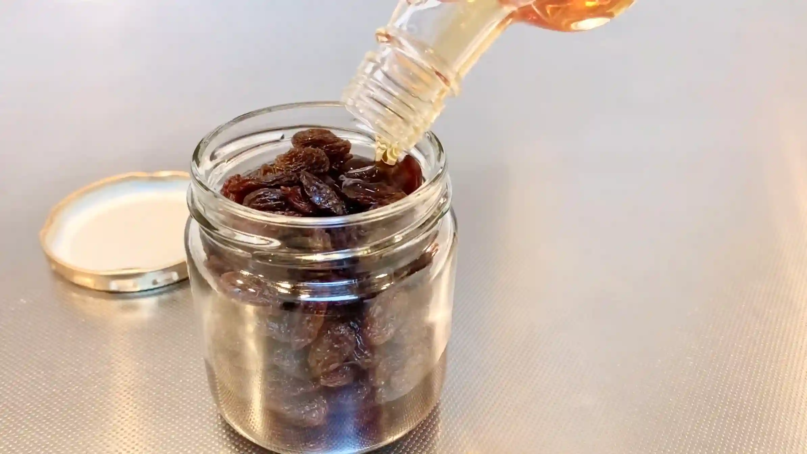
カスタードクリーム
STEP 1
卵黄、薄力粉、グラニュー糖を鍋に入れ混ぜる
卵黄と砂糖、薄力粉を先にしっかり混ぜ合わせておくことで、加熱したときにダマになりにくくなります。粉っぽさが残らないよう、全体をよく混ぜます。
卵黄と砂糖、薄力粉を先にしっかり混ぜ合わせておくことで、加熱したときにダマになりにくくなります。粉っぽさが残らないよう、全体をよく混ぜます。
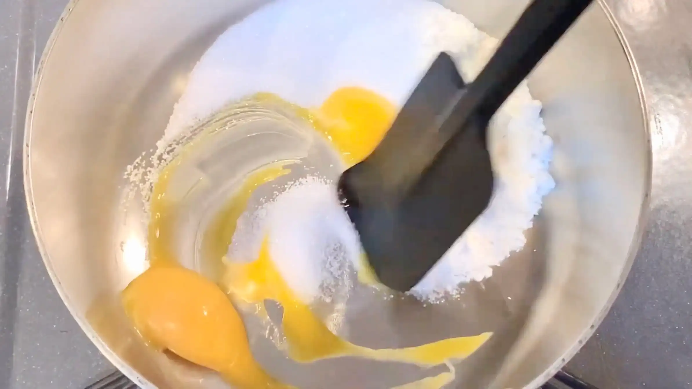
STEP 2
豆乳を加えて中火にかけ、とろみが出るまで混ぜる
火にかけたらヘラを使い、絶えず混ぜます。沸騰してから30秒〜1分程度しっかり加熱して、粉に火を通します。弱火で長時間加熱すると卵が部分的に固まりやすく、ダマになりやすいため、少し怖く感じますが中火で手早く加熱するのがおすすめです。
火にかけたらヘラを使い、絶えず混ぜます。沸騰してから30秒〜1分程度しっかり加熱して、粉に火を通します。弱火で長時間加熱すると卵が部分的に固まりやすく、ダマになりやすいため、少し怖く感じますが中火で手早く加熱するのがおすすめです。
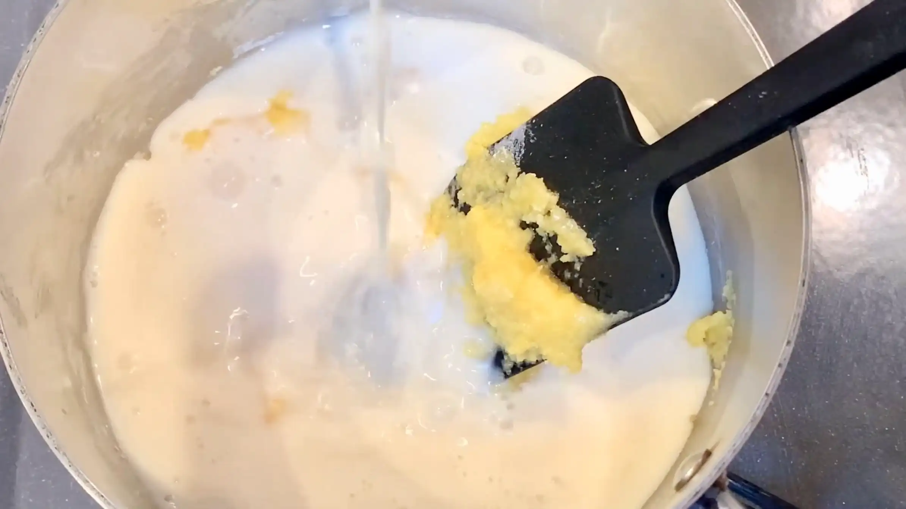
STEP 3
火を止めバターを加えて混ぜ、冷蔵する
火を止めてからバターを加え、余熱で溶かしながら混ぜます。クリームを平らな容器に移してならし、表面にラップをぴったり密着させます。卵や豆乳を使ったクリームは傷みやすいため、粗熱が取れたら冷蔵庫に入れ、できるだけ早くしっかり冷やします。
火を止めてからバターを加え、余熱で溶かしながら混ぜます。クリームを平らな容器に移してならし、表面にラップをぴったり密着させます。卵や豆乳を使ったクリームは傷みやすいため、粗熱が取れたら冷蔵庫に入れ、できるだけ早くしっかり冷やします。
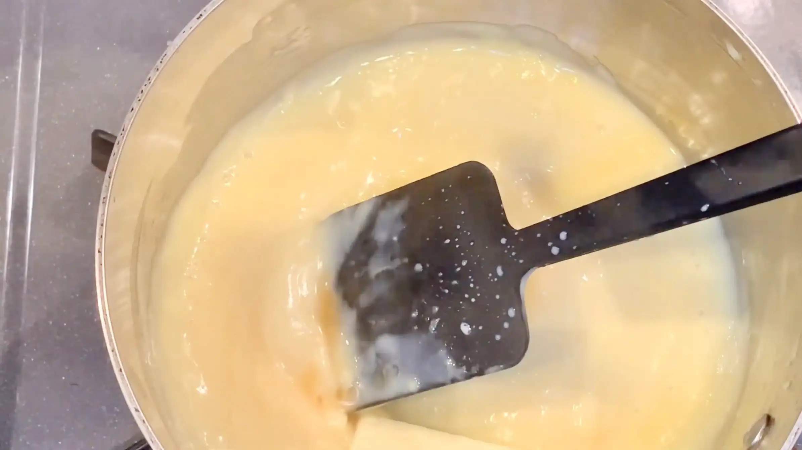
生地
STEP 1
ホームベーカリーで生地を10分程混ぜ、取り出す
生地は後に折り込みを行うため、ここでしっかりこねておく必要はありません。材料が均一に混ざって生地がまとまれば取り出します。
生地は後に折り込みを行うため、ここでしっかりこねておく必要はありません。材料が均一に混ざって生地がまとまれば取り出します。
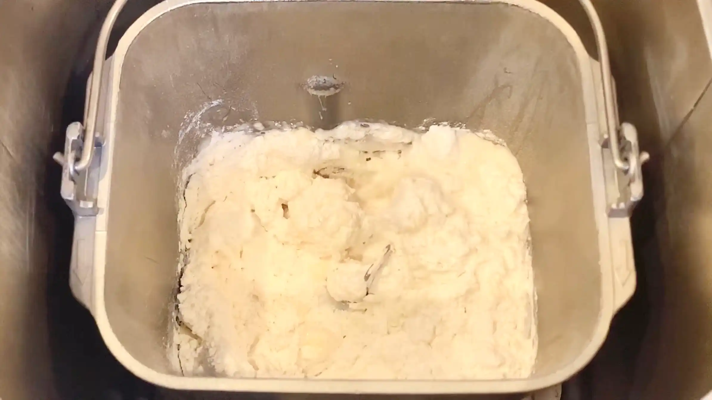
STEP 2
生地を丸めて、常温で40分おく
ホームベーカリーから出した生地を丸め、表面をなめらかに整えて、ボウルをかぶせます。40分休ませると生地がゆるみ、このあとバターを包んで伸ばす作業が楽になります。
ホームベーカリーから出した生地を丸め、表面をなめらかに整えて、ボウルをかぶせます。40分休ませると生地がゆるみ、このあとバターを包んで伸ばす作業が楽になります。
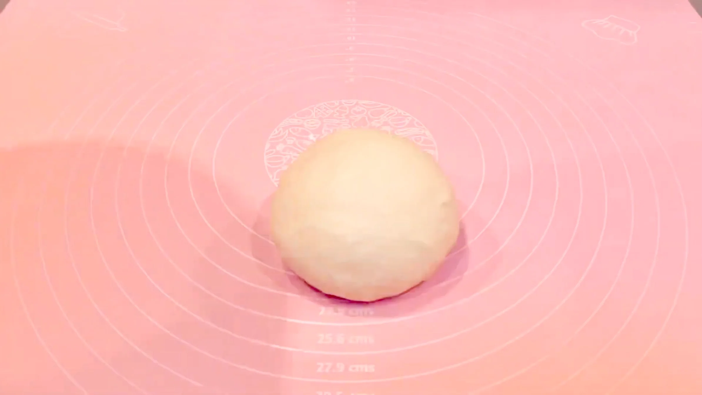
STEP 3
折込用バターを5g×12枚に切る
今回は、バターシートを作らず、冷たいバターを切り分けたまま生地に並べる折り込み方法に挑戦します。長方形にきれいに並べられるよう、5gずつの大きさをできるだけそろえて、12枚に切り分けておきます。
今回は、バターシートを作らず、冷たいバターを切り分けたまま生地に並べる折り込み方法に挑戦します。長方形にきれいに並べられるよう、5gずつの大きさをできるだけそろえて、12枚に切り分けておきます。
STEP 4
生地を25㎝×25㎝に伸ばし、バターを並べる（[動画 02:49]）
めん棒を中央から左上、右上、左下、右下へと外側に動かすと、生地が自然に四角く伸びていきます。25㎝×25㎝に伸ばしたら、画像のように、12枚のバターを並べます。
めん棒を中央から左上、右上、左下、右下へと外側に動かすと、生地が自然に四角く伸びていきます。25㎝×25㎝に伸ばしたら、画像のように、12枚のバターを並べます。
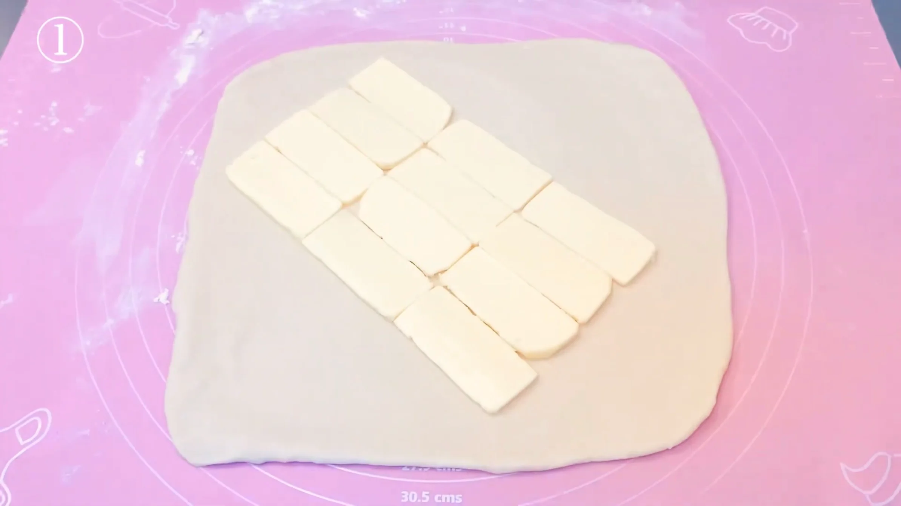
STEP 5
生地でバターを包む（[動画 03:22]）
バターが生地からはみ出さないようにしっかり包みます。
バターが生地からはみ出さないようにしっかり包みます。
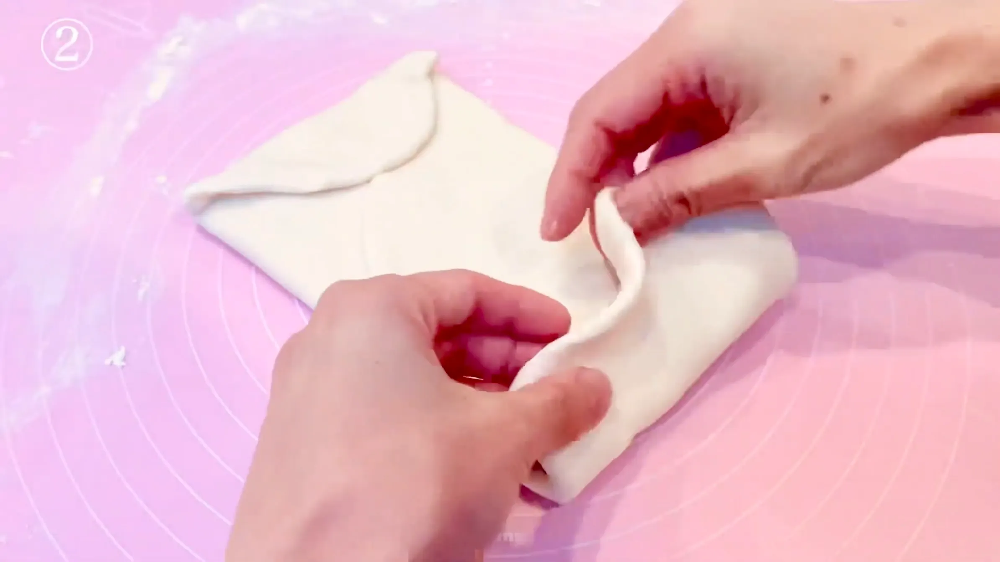
STEP 6
45cm×15cmに伸ばす（[動画 03:31]）
バターを包んだ生地を、厚みが均一になるようにめん棒で少しずつ伸ばします。（動画でご覧いただくとわかるように、今回は切り分けたバターを並べているだけなので、生地とバターの間に少し隙間ができてしまいました。生地を均一に伸ばすのが難しくなるため、私は今回のやり方より、バターシートを使う方がおすすめだと感じました。）
バターを包んだ生地を、厚みが均一になるようにめん棒で少しずつ伸ばします。（動画でご覧いただくとわかるように、今回は切り分けたバターを並べているだけなので、生地とバターの間に少し隙間ができてしまいました。生地を均一に伸ばすのが難しくなるため、私は今回のやり方より、バターシートを使う方がおすすめだと感じました。）
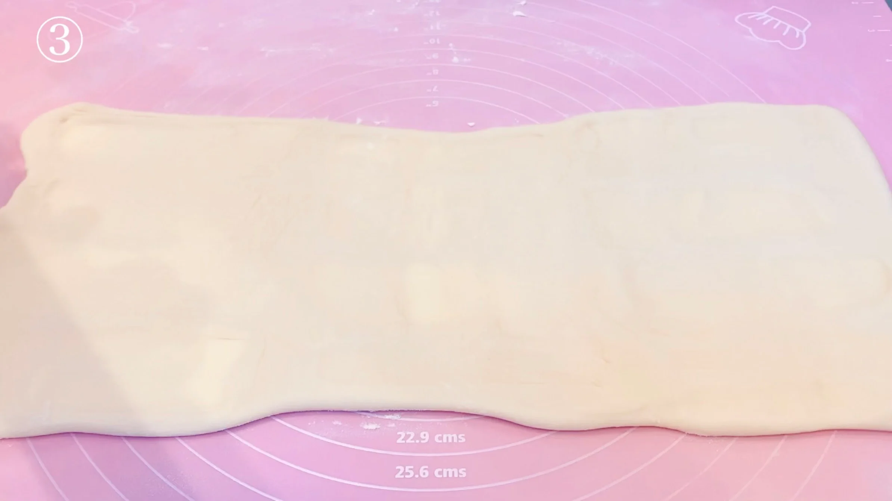
STEP 7
四つ折りにする
四つ折りにすることで、一度の折り込みで多くの層を作ります。生地とバターの層を重ねることで、焼き上がりのサクッとした食感につながります。
四つ折りにすることで、一度の折り込みで多くの層を作ります。生地とバターの層を重ねることで、焼き上がりのサクッとした食感につながります。
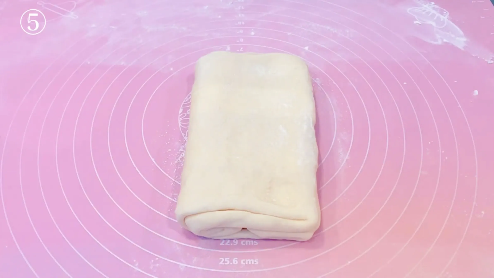
STEP 8
ラップをして、30分冷凍する
生地を冷やすことで、バターを固めて扱いやすい状態に戻します。生地の温度が上がったまま次の折り込みを行うと、バターが生地になじみすぎて層が作りにくくなるため、しっかり冷やしてから次へ進みます。
生地を冷やすことで、バターを固めて扱いやすい状態に戻します。生地の温度が上がったまま次の折り込みを行うと、バターが生地になじみすぎて層が作りにくくなるため、しっかり冷やしてから次へ進みます。
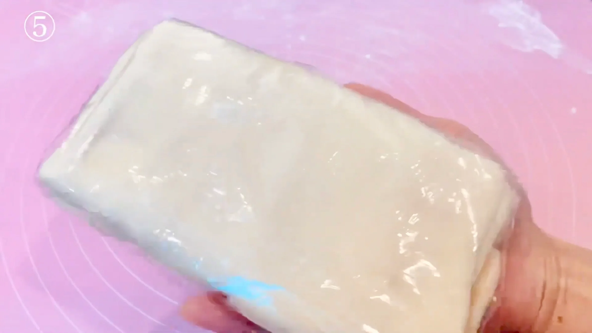
STEP 9
35cm×12cmに伸ばす
最初から強い力をかけると折り込んだ層がつぶれやすいため、まずめん棒で軽く押さえて生地をなじませてから、少しずつ35㎝×12㎝に伸ばします。
最初から強い力をかけると折り込んだ層がつぶれやすいため、まずめん棒で軽く押さえて生地をなじませてから、少しずつ35㎝×12㎝に伸ばします。
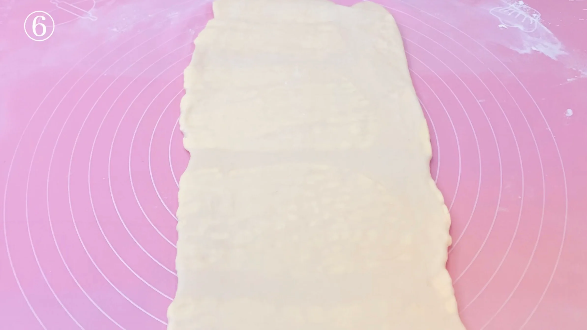
STEP 10
三つ折りにする
三つ折りにすることで、さらに生地とバターの層を重ね、折り込みを仕上げます。四つ折りと三つ折りを組み合わせることで、折り込み回数を抑えながら十分な層を作ります。
三つ折りにすることで、さらに生地とバターの層を重ね、折り込みを仕上げます。四つ折りと三つ折りを組み合わせることで、折り込み回数を抑えながら十分な層を作ります。
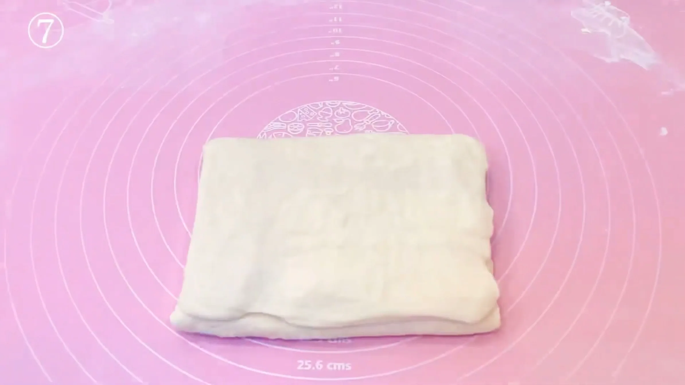
STEP 11
35cm×18cmに伸ばし、フィリングをのせる（[動画 05:15]）
生地を伸ばし、カスタードクリームを塗って、ラムレーズンをのせます。カスタードクリームは冷蔵で固まっているため、軽くほぐしてヘラなどを使い塗ります。巻き終わりにフィリングがはみ出すのを防ぐため、下側は5㎝程あけておきます。
生地を伸ばし、カスタードクリームを塗って、ラムレーズンをのせます。カスタードクリームは冷蔵で固まっているため、軽くほぐしてヘラなどを使い塗ります。巻き終わりにフィリングがはみ出すのを防ぐため、下側は5㎝程あけておきます。
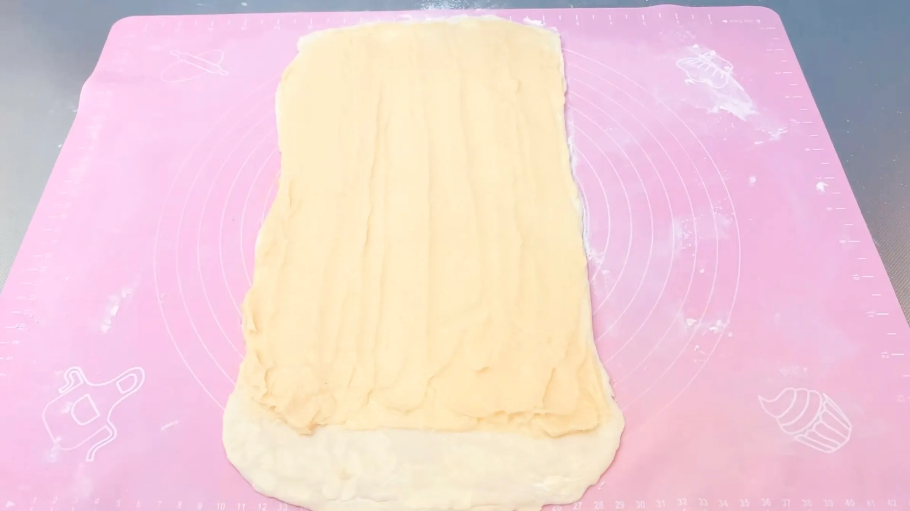
STEP 12
生地を巻く（[動画 06:04]）
巻き始めはフィリングがすべるので少し難しいですが、芯ができたら均一な力でゆっくり巻いていきます。巻き終わりは生地がつきにくいため、ハケで水を塗り、軽く閉じます。
巻き始めはフィリングがすべるので少し難しいですが、芯ができたら均一な力でゆっくり巻いていきます。巻き終わりは生地がつきにくいため、ハケで水を塗り、軽く閉じます。
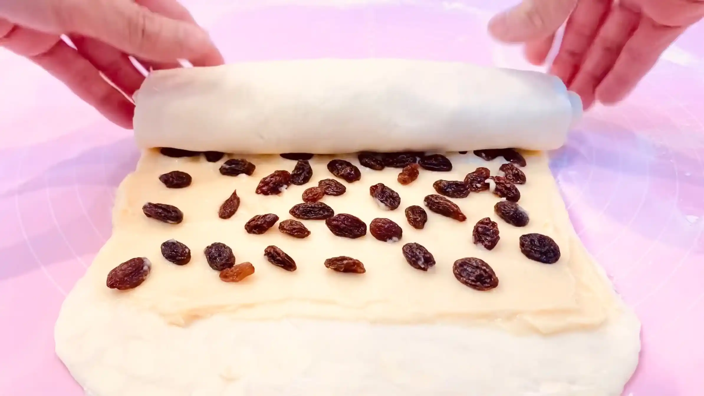
STEP 13
糸で9等分に切り分けて天板に並べる（[動画 07:47]）
包丁で押し切ると生地がつぶれやすいため、糸を使って切り分けることで、巻いた生地の形を保ったままきれいにカットできます。9等分にしたら、切り口が上を向くように形を整えて天板に並べます。
包丁で押し切ると生地がつぶれやすいため、糸を使って切り分けることで、巻いた生地の形を保ったままきれいにカットできます。9等分にしたら、切り口が上を向くように形を整えて天板に並べます。
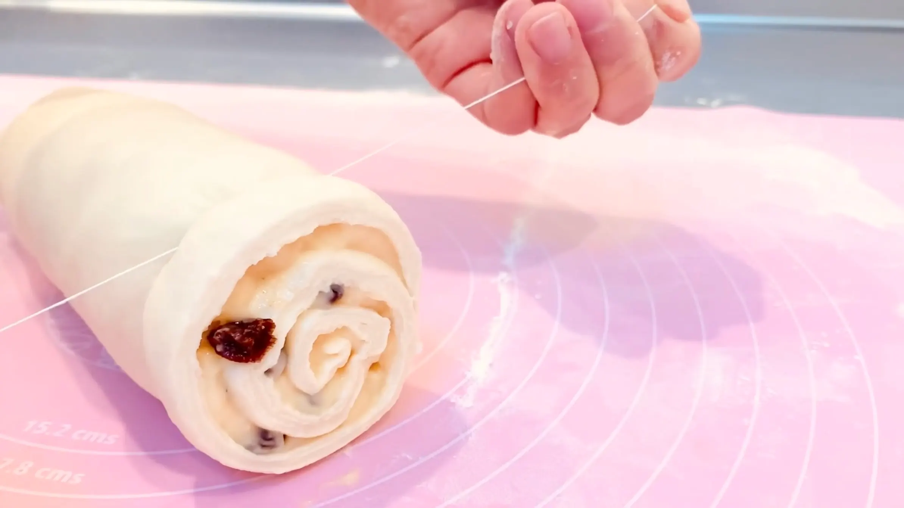
STEP 14
ラップをして、常温で2時間おく
冷凍庫で冷やした生地は、発酵がなかなか進みません。切り口を上にして並べた生地にラップをかけ、2時間を目安においておき、ひと回り大きくふんわりしてきたら焼成に進みます。
冷凍庫で冷やした生地は、発酵がなかなか進みません。切り口を上にして並べた生地にラップをかけ、2時間を目安においておき、ひと回り大きくふんわりしてきたら焼成に進みます。
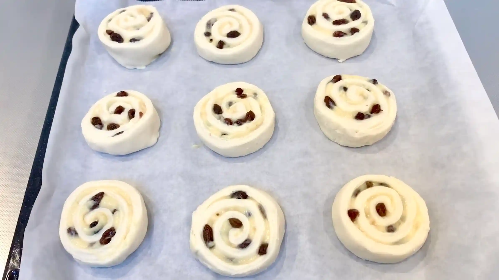
STEP 15
グラニュー糖と水をレンジで加熱し、ラム酒を加えてラム酒シロップを作る
ラム酒は風味を残すために、加熱後に加えます。焼き上がりに使えるよう、あらかじめ準備しておきます。
ラム酒は風味を残すために、加熱後に加えます。焼き上がりに使えるよう、あらかじめ準備しておきます。
STEP 16
表面に豆乳または牛乳を塗り、予熱したオーブン200℃で20分〜25分焼く
焼き色を見ながら、200℃で20分を目安に焼きます。表面だけでなく底にもこんがり焼き色がついたら、取り出します。生地の大きさやオーブンによって焼き時間は前後するので、時間は目安にしてください。
焼き色を見ながら、200℃で20分を目安に焼きます。表面だけでなく底にもこんがり焼き色がついたら、取り出します。生地の大きさやオーブンによって焼き時間は前後するので、時間は目安にしてください。
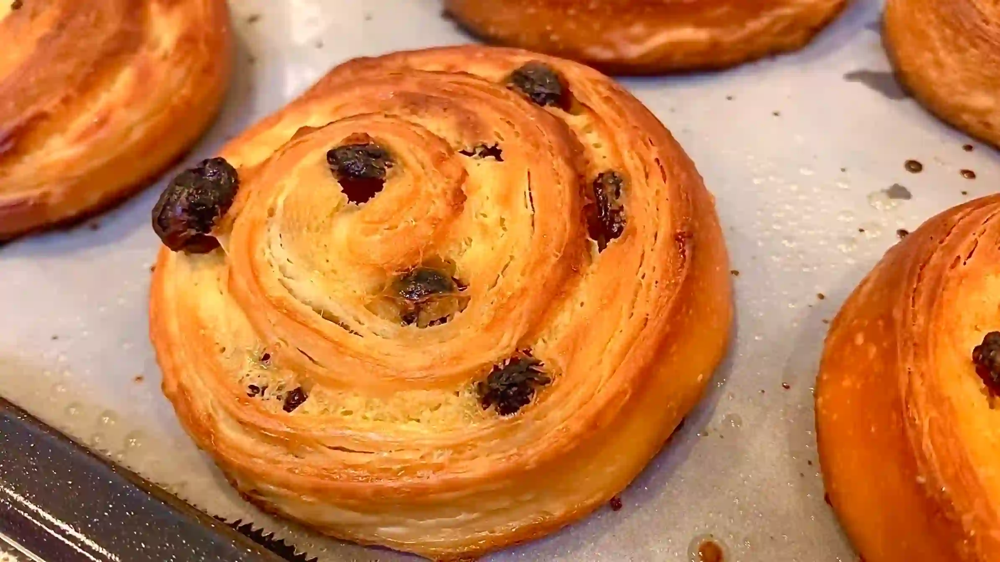
STEP 17
焼き上がりにラム酒シロップを塗る
焼き上がったパンが熱いうちにラム酒シロップを塗ります。表面にシロップがなじみ、ラム酒の華やかな香りがするしっとりした口当たりのパンオレザンになります。
焼き上がったパンが熱いうちにラム酒シロップを塗ります。表面にシロップがなじみ、ラム酒の華やかな香りがするしっとりした口当たりのパンオレザンになります。
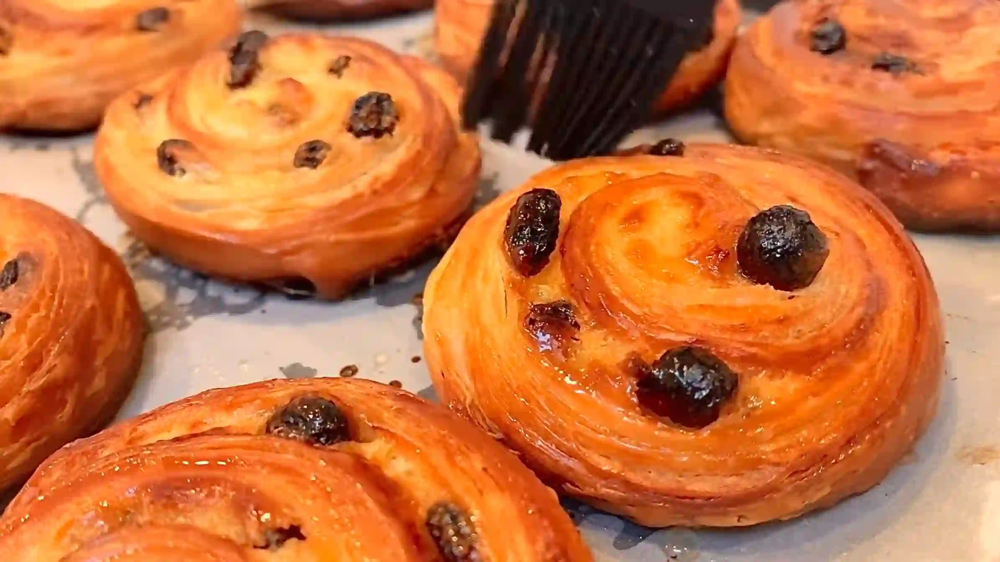
動画でチェック
おいしく作るためのワンポイントコラム
サクサクのデニッシュ生地に、ふんわり大人な香りのラムレーズンとカスタードがたまらない『パン・オ・レザン』！今回は、お安く手軽に手に入る「有塩バター」を使い、バターシートを作らず切って並べる手軽な折り込みに挑戦してみました。実際に作ってみて分かったリアルな気づきを「3つのポイント」でご紹介します。
① 有塩バターで作る検証結果
折り込みパンといえば無塩バターが基本ですが、今回は手軽な有塩バター（60g）を使って作りました。「しょっぱくなったりしないかな？」と少し心配になりますが、計算してみるとバターに含まれる塩分量は約0.9g。生地の配合に影響を与えるような量ではなく、バターのコクが引き立ってとっても美味しく仕上がりました！それでも気になるという方は、生地に入れるお塩を減らすと安心かと思います。無塩バターはお高いので、有塩バターで作れると嬉しいですよね！
② バターを切って並べる折り込み
今回はバターシートを作らず、冷たいバターを薄く切って生地に並べて折り込んでみました。ただ、実際に生地を伸ばしていくと、伸ばすうちにバター同士が離れて隙間ができてしまうという難点が。隙間ができると、バターの固い部分と生地の柔らかい部分で手応えに差が出てしまい、均一に伸ばすのが少し難しかったです。バターシートを作るのは手間ですが、ここは急がば回れ。意外にも最初に面倒なシートを作った方が、最後まで折り込みしやすいなと感じました。別レシピでご紹介しております、簡単なデニッシュ生地の作り方（レシピはこちら）もぜひ参考にしてみてください！
③ パン屋さん直伝！仕上げの裏技
焼き上がりの熱いうちに、仕上げとしてレーズンを漬けていたラム酒を使った「ラム酒シロップ」をハケでたっぷり塗っていきます。これは、私がパン屋さんでアルバイトをしていたときに覚えた秘密の裏技です！これを塗ることで、ラム酒の華やかな香りがふわっと引き立ち、一気にワンランク上の高級感あふれるお味になります。さらに、シロップを塗ることでパンの乾燥を防いでしっとり感を保ち、まるで売り物のようなキラキラとした極上のツヤも出せるという、嬉しい効果もたくさんありますね！
有塩バターでも大満足なパン・オ・レザンが焼き上がりました！焼き上がりにラム酒シロップを塗る裏技も、おすすめなのでぜひ試してみてください！糸を使って綺麗な断面に切り分ける工程など、詳しい手順は動画やレシピもあわせてご参照ください。
① 有塩バターで作る検証結果
折り込みパンといえば無塩バターが基本ですが、今回は手軽な有塩バター（60g）を使って作りました。「しょっぱくなったりしないかな？」と少し心配になりますが、計算してみるとバターに含まれる塩分量は約0.9g。生地の配合に影響を与えるような量ではなく、バターのコクが引き立ってとっても美味しく仕上がりました！それでも気になるという方は、生地に入れるお塩を減らすと安心かと思います。無塩バターはお高いので、有塩バターで作れると嬉しいですよね！
② バターを切って並べる折り込み
今回はバターシートを作らず、冷たいバターを薄く切って生地に並べて折り込んでみました。ただ、実際に生地を伸ばしていくと、伸ばすうちにバター同士が離れて隙間ができてしまうという難点が。隙間ができると、バターの固い部分と生地の柔らかい部分で手応えに差が出てしまい、均一に伸ばすのが少し難しかったです。バターシートを作るのは手間ですが、ここは急がば回れ。意外にも最初に面倒なシートを作った方が、最後まで折り込みしやすいなと感じました。別レシピでご紹介しております、簡単なデニッシュ生地の作り方（レシピはこちら）もぜひ参考にしてみてください！
③ パン屋さん直伝！仕上げの裏技
焼き上がりの熱いうちに、仕上げとしてレーズンを漬けていたラム酒を使った「ラム酒シロップ」をハケでたっぷり塗っていきます。これは、私がパン屋さんでアルバイトをしていたときに覚えた秘密の裏技です！これを塗ることで、ラム酒の華やかな香りがふわっと引き立ち、一気にワンランク上の高級感あふれるお味になります。さらに、シロップを塗ることでパンの乾燥を防いでしっとり感を保ち、まるで売り物のようなキラキラとした極上のツヤも出せるという、嬉しい効果もたくさんありますね！
有塩バターでも大満足なパン・オ・レザンが焼き上がりました！焼き上がりにラム酒シロップを塗る裏技も、おすすめなのでぜひ試してみてください！糸を使って綺麗な断面に切り分ける工程など、詳しい手順は動画やレシピもあわせてご参照ください。


今回は、ラムレーズンとカスタードをたっぷり巻き込んだ、大人贅沢な『パン・オ・レザン』をご紹介します！有塩バターをそのまま並べて折り込む手軽な方法に挑戦し、実際に作ってみてわかった3つのポイントをご紹介します。